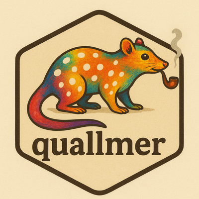

Create an audit trail from quallmer objects
qlm_trail.RdCreates a complete audit trail documenting your qualitative coding workflow. Following Lincoln and Guba's (1985) concept of the audit trail for establishing trustworthiness in qualitative research, this function captures the full decision history of your AI-assisted coding process.
Arguments
- ...
One or more quallmer objects (
qlm_coded,qlm_comparison, orqlm_validation). When multiple objects are provided, they will be used to reconstruct the complete workflow chain.- path
Optional base path for saving the audit trail. When provided, creates
{path}.rds(complete archive) and{path}.qmd(human-readable report). IfNULL(default), the trail is only returned without saving.
Value
A qlm_trail object containing:
- runs
List of run information with coded data, ordered from oldest to newest
- complete
Logical indicating whether all parent references were resolved
Details
Lincoln and Guba (1985, pp. 319-320) describe six categories of audit trail materials for establishing trustworthiness in qualitative research. The quallmer package operationalizes these for LLM-assisted text analysis:
- Raw data
Original texts stored in coded objects
- Data reduction products
Coded results from each run
- Data reconstruction products
Comparisons and validations
- Process notes
Model parameters, timestamps, decision history
- Materials relating to intentions
Function calls documenting intent
- Instrument development information
Codebook with instructions and schema
When path is provided, the function creates:
{path}.rds: Complete trail object for R (reloadable withreadRDS()){path}.qmd: Quarto document with full audit trail documentation
Credentials
Both files are written to be shared, so neither carries the value of a
credential a run was configured with. An api_key, the values of
api_headers entries named like a credential, and any userinfo or
credential-named query parameter in a base_url are replaced by
"<redacted>" in each run's recorded call and chat arguments. The
returned object is redacted in the same way, so the trail in memory and
the two files agree. The trail records that a credential was supplied, not
what it was; a qlm_coded object loaded from the .rds therefore needs a
credential of its own before it can be replicated.
In a recorded call, a credential argument is kept only when it names a
source that cannot itself contain the value: a variable, a qualified name,
or an exact one-argument Sys.getenv("MY_KEY") lookup. Other computed
expressions are replaced wholesale because their unevaluated arguments may
contain a literal credential. The exact credentials = function() Sys.getenv("MY_KEY") callback is also kept, rebuilt without its environment;
a callback of any other shape is replaced by "<redacted>", since it may
hold or capture the secret it returns.
Examples
# Load example coded objects
examples <- readRDS(system.file("extdata", "example_objects.rds", package = "quallmer"))
# View audit trail from two coding runs
trail <- qlm_trail(
examples$example_coded_sentiment,
examples$example_coded_mini
)
print(trail)
#> # quallmer audit trail (2 runs)
#>
#> 1. example_sentiment (original)
#> 2026-02-05 01:29 | openai/gpt-4.1
#> Codebook: Sentiment analysis
#>
#> 2. example_mini (parent: example_sentiment)
#> 2026-02-05 01:29 | openai/gpt-4.1-mini
#> Codebook: Sentiment analysis
# \donttest{
# Save complete audit trail (creates .rds and .qmd files)
qlm_trail(
examples$example_coded_sentiment,
examples$example_coded_mini,
path = tempfile("my_analysis")
)
#> ✔ Trail saved to /tmp/RtmpTL7E6Q/my_analysis1f047702a93c.rds
#> ✔ Report saved to /tmp/RtmpTL7E6Q/my_analysis1f047702a93c.qmd
#> ℹ Render with `quarto::quarto_render("/tmp/RtmpTL7E6Q/my_analysis1f047702a93c.qmd")`
# }